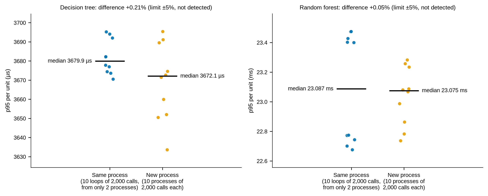
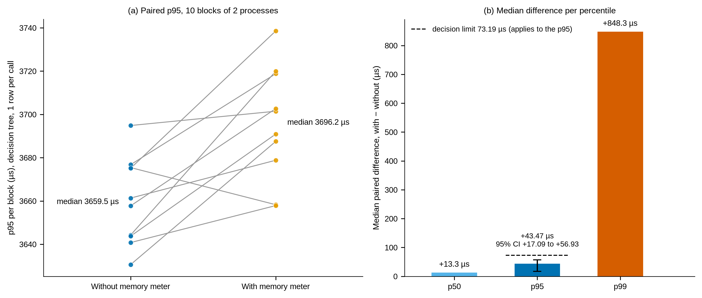
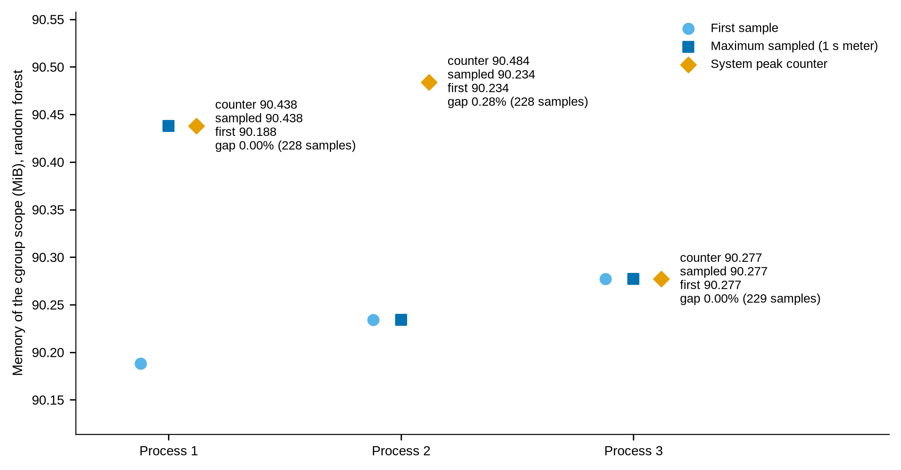
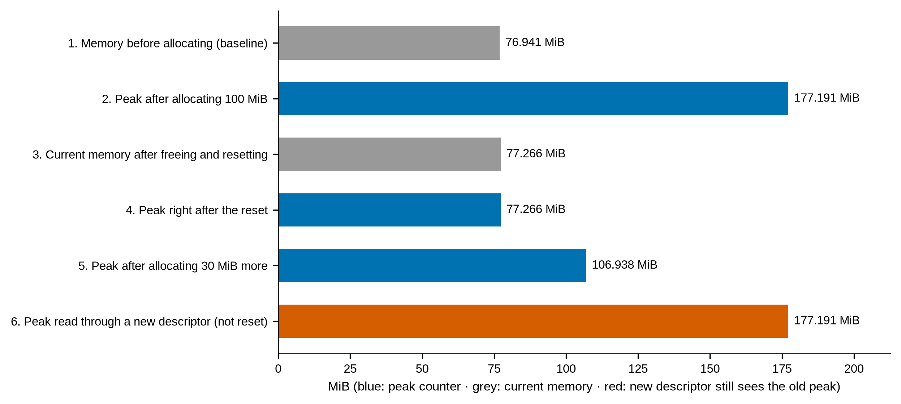
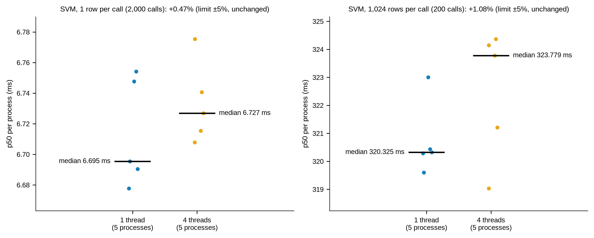
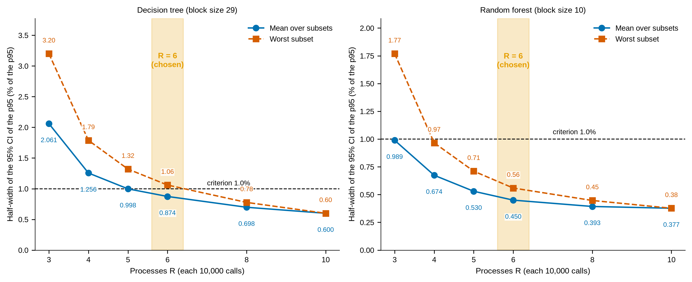
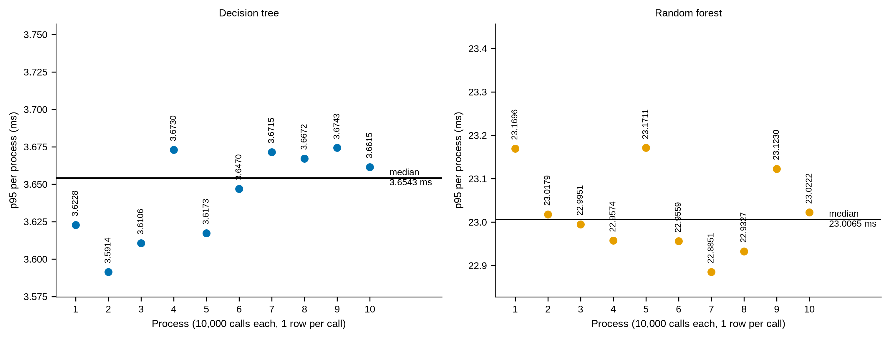
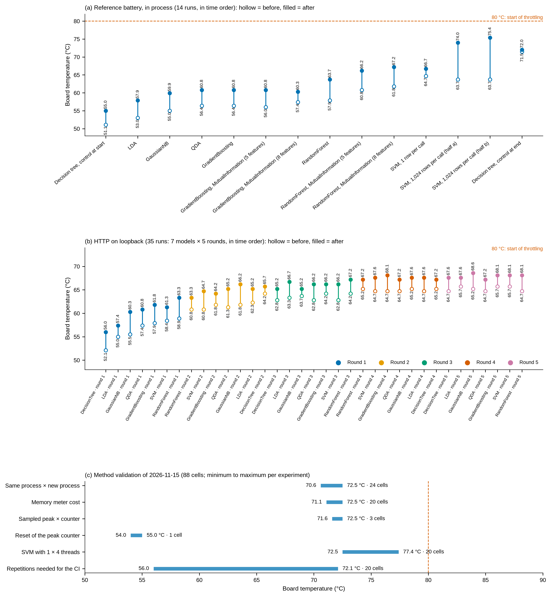

Validação do método de medição no rasp
Esta bateria testa a régua, não os modelos. Antes de medir latência e memória de todos os modelos, ela confere se o jeito de medir é confiável: se processo novo ou reaproveitado muda o número, se o medidor de memória atrapalha a latência, se o pico de memória lido é o pico real, se dá para zerar o contador de pico, se o número de threads do SVM importa e quantos processos são necessários para o intervalo de confiança (IC) do p95 ficar estreito.
Nenhum número desta página é o resultado de latência ou de memória do projeto: as medições de latência e de memória feitas até agora são exploratórias, e só o método foi validado. As figuras têm texto em inglês e ficam em figuras/ na raiz do site; as tabelas e o texto estão em português.
Condições comuns
- Máquina: o rasp (Raspberry Pi 4 Model B), kernel 6.18.60+rpt-rpi-v8, na condição de referência: desktop desligado, governor
performancenos quatro núcleos, interrupções de rede no núcleo 0. - Cada célula é um processo novo, dentro de um escopo do systemd com contabilidade de memória e preso a um núcleo: o programa que mede no núcleo 2, o medidor de memória no núcleo 1, 1 thread. A exceção é o SVM com 1 × 4 threads, que usa os núcleos 0 a 3.
- Modelos medidos: árvore de decisão, Random Forest e SVM, todos com o seletor LowVariance.
- Ordem sorteada (semente 42). Uma célula seria descartada se o registro
throttledmudasse ou tivesse algum dos 4 bits baixos ligados. - Resultado do dia: 88 células válidas, nenhuma descartada,
throttledsempre0x0. A placa ficou entre 54,0 e 77,4 °C (limite de redução de frequência: 80 °C, não atingido). Os experimentos principais rodaram com a placa a 70–77 °C; a regra antiga de invalidar célula com temperatura inicial ≥ 55 °C foi relaxada para esta bateria, por decisão da autora. - Medidor de memória (amostrador): lê o consumo do escopo a cada 1 segundo.
Resumo das decisões
| Experimento | O que se mediu | Resultado | Limite | Veredito | Efeito no protocolo |
|---|---|---|---|---|---|
| Mesmo processo × processo novo | diferença entre as medianas do p95 (mesmo − novo ÷ novo), 10 unidades contra 10 | +0,21% (árvore); +0,05% (Random Forest) | ±5% | não detectado | nenhum: o protocolo já usa processo novo |
| Custo do medidor de memória | diferença pareada do p95 (com − sem medidor), mediana de 10 blocos | +43,47 µs (IC 95%: +17,09 a +56,93) | 73,19 µs (o maior entre 2% do p95 e 5 µs) | fundir | latência e memória podem ser medidas na mesma bateria |
| Pico amostrado × contador do sistema | maior lacuna entre o contador de pico e o máximo amostrado | 0,28% (o pico subiu só 0,25 MiB na rajada) | 5% | a amostra vale (teste fraco) | o máximo amostrado pode entrar nas tabelas, só para memória estável |
| Zerar o contador de pico | 5 conferências do reset, com 100 MiB | 5 de 5 passam | todas | passa | o reset funciona se for feito pelo mesmo descritor de arquivo |
| SVM com 1 × 4 threads | diferença entre as medianas do p50 (4 − 1 thread ÷ 1 thread) | +0,47% (1 linha por chamada); +1,08% (1.024 linhas) | ±5% | não muda | SVM fica fora do subexperimento de threads |
| Repetições necessárias para o IC | meia-largura do IC 95% do p95, em % do p95 | árvore: R mínimo 5, bloco 29; Random Forest: R mínimo 3, bloco 10 | 1,0% | decisão 187: R = 6, bloco 29 | 6 processos de 10.000 chamadas por configuração |
1. Mesmo processo × processo novo
Pergunta: repetir a medição dentro de um processo já aquecido dá o mesmo p95 que usar um processo novo a cada vez? Como: para cada modelo, 2 rodadas; em cada uma, 1 processo "mesmo" com 5 laços de 2.000 chamadas e 5 processos "novo" com 1 laço de 2.000 chamadas cada; 200 chamadas de aquecimento, 1 linha por chamada.

Limitação: o teste é fraco no grupo "mesmo processo", porque as 10 unidades dele vêm de só 2 processos. Na Random Forest, os 5 laços do processo da rodada 1 deram 22,68 a 22,77 ms e os da rodada 2, 23,40 a 23,47 ms (cerca de 3,3% de diferença entre processos): a variação que importa é a entre processos, e é ela que o experimento 6 mede. "Não detectado" não é "equivalência provada": não há IC da diferença, só a comparação das medianas.
2. Custo do medidor de memória
Pergunta: o medidor que lê a memória a cada 1 s atrasa as predições? Como: árvore, 1 linha por chamada, 10.000 chamadas por processo; 10 blocos de 2 processos (com e sem medidor, ordem sorteada dentro do bloco). O veredito "fundir" exige que o limite superior do IC 95% da diferença fique abaixo de 73,19 µs.

Limitações: o efeito existe (o IC fica acima de zero), mas é pequeno no p95, cerca de 1,2% do p95 sem medidor. A cauda sobe muito mais: o p99 sobe +848,3 µs; o critério olha só o p95. Só a árvore, só o intervalo de 1 s, e o medidor ficou em outro núcleo (medidor mais rápido ou no mesmo núcleo não foi testado).
3. Pico amostrado × contador do sistema
Pergunta: o maior valor visto pelo medidor (a cada 1 s) é o pico real, registrado pelo contador de pico do sistema? Como: Random Forest, 1 linha por chamada, uma rajada de 10.000 chamadas (cerca de 237 s) em cada um de 3 processos; o contador é zerado antes da rajada e comparado com o maior valor amostrado na janela.

Limitação: o teste quase não foi posto à prova. O pico subiu no máximo 0,25 MiB na janela (por exemplo, de 90,188 para 90,438 MiB no processo 1): os dois números concordam porque a memória da Random Forest é estável, não porque a amostragem pegaria um pico curto. O resultado vale para memória estável, não para picos transitórios.
4. Zerar o contador de pico
Pergunta: dá para zerar o contador de pico entre duas medições, no mesmo escopo, e ele voltar a contar certo? Como: um processo mede a memória base, aloca 100 MiB, lê o pico, libera, zera o contador pelo mesmo descritor de arquivo, lê de novo, aloca mais 30 MiB e, por fim, lê o pico por um descritor novo. Há 5 conferências automáticas.

Limitações: uma única célula e um único kernel (6.18.60); alocações grandes de uma vez; não testa zerar muitas vezes seguidas nem com várias threads alocando.
5. SVM com 1 × 4 threads
Pergunta: o SVM, que usa bibliotecas de álgebra (BLAS e OpenMP), muda de latência com 4 threads? Como: 1 e 4 threads, com 1 linha por chamada (2.000 chamadas) e com 1.024 linhas por chamada (200 chamadas), 5 processos por combinação, ordem sorteada, núcleos 0 a 3. Conferi na saída de cada célula que o ajuste de threads chegou ao BLAS e ao OpenMP.

Limitações: só o SVM, 5 processos por combinação. Com 1.024 linhas, o espalhamento entre processos (319,0 a 324,4 ms, cerca de 1,7%) é do tamanho da diferença medida. Não se mediu por que 4 threads não ajudam; uma hipótese, não testada, é que o SVM do scikit-learn roda em uma thread só. O núcleo 0, usado nas 4 threads, também recebe as interrupções de rede.
6. Repetições necessárias para o IC
Pergunta: quantos processos (R) são precisos para o IC 95% do p95 ter meia-largura de no máximo 1,0% do p95? Como: 10 processos novos de 10.000 chamadas (1 linha por chamada, sem medidor) para a árvore e 10 para a Random Forest; bootstrap em dois níveis (processos e blocos de chamadas consecutivas, para respeitar a autocorrelação), 2.000 reamostragens, semente 42. O bloco vem da autocorrelação: 29 na árvore e 10 na Random Forest. Para R menor que 10, sorteiam-se até 100 subconjuntos dos 10 processos.

| R | Árvore, média (%) | Árvore, pior subconjunto (%) | Random Forest, média (%) | Random Forest, pior subconjunto (%) |
|---|---|---|---|---|
| 3 | 2,061 | 3,20 | 0,989 | 1,77 |
| 4 | 1,256 | 1,79 | 0,674 | 0,97 |
| 5 | 0,998 | 1,32 | 0,530 | 0,71 |
| 6 (escolhido) | 0,874 | 1,06 | 0,450 | 0,56 |
| 8 | 0,698 | 0,78 | 0,393 | 0,45 |
| 10 | 0,600 | 0,60 | 0,377 | 0,38 |
Decisão 187: R = 6 processos de 10.000 chamadas e bloco 29. Pela regra pré-registrada, o R mínimo é 5 na árvore (média 0,998%, por pouco) e 3 na Random Forest (média 0,989%, também por pouco), e vale o maior bloco; a autora escolheu R = 6 para ter folga sobre o limite de 1,0%.

Limitações: os dois R mínimos passam com margem estreita e o pior subconjunto passa do limite; com R = 6, o pior subconjunto da árvore ainda chega a 1,06%. Perto de R = 10, os subconjuntos reaproveitam os mesmos 10 processos (R = 10 tem um só), então essas estimativas não são independentes. A grade começa em R = 3, e não se sabe se menos de 3 serviria. Vale só para o regime isolado, 1 linha por chamada e sem estresse; o bloco 29 não foi calibrado para o HTTP em loopback.
Temperatura das execuções
A figura abaixo junta a temperatura da placa antes e depois de cada execução da bateria de referência (em processo, 14 execuções), das 35 execuções do HTTP em loopback e a faixa de cada experimento desta validação. Nenhuma passou de 77,4 °C.

O que esta bateria não cobre
- Nenhum estresse: tudo no regime isolado, sem carga de CPU, de memória ou de rede.
- Só em processo: nada via HTTP em loopback.
- Poucos modelos por experimento (árvore, Random Forest e SVM), não os 11 da bateria de referência.
- Um rasp, um dia, uma temperatura alta (70 a 77 °C na maior parte).
- Sem comparação do custo de CPU do medidor, só da latência.